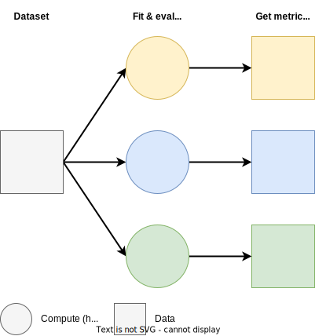

Simple AutoML for time series with Ray Core
Contents
Simple AutoML for time series with Ray Core#
Tip
We strongly recommend using Ray AIR Tuner for hyperparameter tuning/AutoML, which will enable you to build it faster and more easily, and get the built-in benefits like logging, fault tolerance and many more. If you think your use case cannot be supported by Ray AIR, we’d love to get your feedback e.g. through a Ray GitHub issue.
AutoML (Automatic Machine Learning) is a broad topic, but in essence, it boils down to choosing the best model (and possibly preprocessing) for the task and dataset at hand. While there exist multiple advanced AutoML frameworks, we can quickly build a simple solution using just Ray Core and stateless tasks.
If you are interested in applying more advanced optimization algorithms or would like to take advantage of a greater level of abstraction and multiple built-in features, we highly recommend to use a Ray AIR Tuner.
In this notebook, we will build an AutoML (or more precisely, an AutoTS) system which will choose the best combination of a statsforecast model and hyperparameters for a time series regression task - here, we will be using a partition of the M5 dataset.
Simple AutoML consists of running different functions (hyperparameter configurations) on the same data independently of each other. We will want to train models with different configurations and evaluate them to obtain various metrics, such as mean square error. After all configurations have been evaluated, we will be able to choose the best configuration according to the metric we want to use.

To make this example more practical, we will be using time series cross-validation (CV) as our evaluation strategy. Cross-validation works by evaluating a model k-times, each time choosing a different subset (fold) of the data for training and evaluation. This allows for more robust estimation of performance and helps prevent overfitting, especially with small data. In other words, we will be running n * k separate evaluations, where n is the number of configurations and k is the number of folds.
Walkthrough#
Let’s start by importing Ray and initializing a local Ray cluster.
from typing import List, Union, Callable, Dict, Type, Tuple
import time
import ray
import itertools
import pandas as pd
import numpy as np
from collections import defaultdict
from statsforecast import StatsForecast
from statsforecast.models import ETS, AutoARIMA, _TS
from pyarrow import parquet as pq
from sklearn.model_selection import TimeSeriesSplit
from sklearn.metrics import mean_squared_error, mean_absolute_error
ray.init(ignore_reinit_error=True)
Ray
| Python version: | 3.8.5 |
| Ray version: | 2.0.0 |
| Dashboard: | http://console.anyscale-staging.com/api/v2/sessions/ses_ZmHebxHaZpYkw9x9efJ5wBVX/services?redirect_to=dashboard |
We will break up our logic into several functions and a Ray task.
The Ray task is train_and_evaluate_fold, which contains all the logic necessary to fit and evaluate a model on a CV fold of data. We structure our task to take in a dataset and indices splitting it into train and test - that way, we can keep one instance of the dataset in the Ray object store and split it in each task separately. We are defining this as a Ray task as we want all folds to be evaluated in parallel on a Ray cluster - Ray will handle all orchestration and execution. Each task will reserve 1 CPU core by default.
@ray.remote
def train_and_evaluate_fold(
model: _TS,
df: pd.DataFrame,
train_indices: np.ndarray,
test_indices: np.ndarray,
label_column: str,
metrics: Dict[str, Callable[[pd.Series, pd.Series], float]],
freq: str = "D",
) -> Dict[str, float]:
try:
# Create the StatsForecast object with train data & model.
statsforecast = StatsForecast(
df=df.iloc[train_indices], models=[model], freq=freq
)
# Make a forecast and calculate metrics on test data.
# This will fit the model first automatically.
forecast = statsforecast.forecast(len(test_indices))
return {
metric_name: metric(
df.iloc[test_indices][label_column], forecast[model.__class__.__name__]
)
for metric_name, metric in metrics.items()
}
except Exception:
# In case the model fit or eval fails, return None for all metrics.
return {metric_name: None for metric_name, metric in metrics.items()}
evaluate_models_with_cv is a driver function to run our optimization loop. We take in a list of models (with their parameters already set) and the dataframe.
The dataframe is put into the Ray object store and reused, which means we only need to serialize it once. That way, we avoid an Anti-pattern: Passing the same large argument by value repeatedly harms performance.
We treat the fitting of each fold as a separate task. We generate k-tasks for each model and wait for them to complete by calling ray.get(), which blocks until all tasks finish and the results are collected. We then aggregate the returned metrics to calculate mean metrics from each fold for each model.
def evaluate_models_with_cv(
models: List[_TS],
df: pd.DataFrame,
label_column: str,
metrics: Dict[str, Callable[[pd.Series, pd.Series], float]],
freq: str = "D",
cv: Union[int, TimeSeriesSplit] = 5,
) -> Dict[_TS, Dict[str, float]]:
# Obtain CV train-test indices for each fold.
if isinstance(cv, int):
cv = TimeSeriesSplit(cv)
train_test_indices = list(cv.split(df))
# Put df into Ray object store for better performance.
df_ref = ray.put(df)
# Add tasks to be executed for each fold.
fold_refs = []
for model in models:
fold_refs.extend(
[
train_and_evaluate_fold.remote(
model,
df_ref,
train_indices,
test_indices,
label_column,
metrics,
freq=freq,
)
for train_indices, test_indices in train_test_indices
]
)
fold_results = ray.get(fold_refs)
# Split fold results into a list of CV splits-sized chunks.
# Ray guarantees that order is preserved.
fold_results_per_model = [
fold_results[i : i + len(train_test_indices)]
for i in range(0, len(fold_results), len(train_test_indices))
]
# Aggregate and average results from all folds per model.
# We go from a list of dicts to a dict of lists and then
# get a mean of those lists.
mean_results_per_model = []
for model_results in fold_results_per_model:
aggregated_results = defaultdict(list)
for fold_result in model_results:
for metric, value in fold_result.items():
aggregated_results[metric].append(value)
mean_results = {
metric: np.mean(values) for metric, values in aggregated_results.items()
}
mean_results_per_model.append(mean_results)
# Join models and their metrics together.
mean_results_per_model = {
models[i]: mean_results_per_model[i] for i in range(len(mean_results_per_model))
}
return mean_results_per_model
Finally, we have to define the logic to translate a dictionary search space into instantiated models we can pass to evaluate_models_with_cv.
Note
scikit-learn and statsforecast models can be easily serialized and are very small, meaning instantiated models can be easily passed around the Ray cluster. With other frameworks, such as Torch, you may want to instead instantiate the model in the task that fits it in order to avoid issues.
Our generate_configurations generator translates a two-level dictionary, where the keys are the model classes and the values are dictionaries of arguments and lists of their possible values. We want to run a grid search, meaning we want to evaluate every possible hyperparameter combination for the given models.
The search space we will be using later looks like this:
{
AutoARIMA: {},
ETS: {
"season_length": [6, 7],
"model": ["ZNA", "ZZZ"]
}
}
It will translate to the following models:
AutoARIMA(),
ETS(season_length=6, model="ZNA")
ETS(season_length=7, model="ZNA")
ETS(season_length=6, model="ZZZ")
ETS(season_length=7, model="ZZZ")
evaluate_search_space_with_cv is the entry point for our AutoML system, which takes in the search space, dataframe, label column, metrics, the metric to use to choose the best configuration, whether we want to minimize or maximize it, the frequency of the data and the scikit-learn TimeSeriesSplit cross-validation splitter to use.
def generate_configurations(search_space: Dict[Type[_TS], Dict[str, list]]) -> _TS:
# Convert dict search space into configurations - models instantiated with specific arguments.
for model, model_search_space in search_space.items():
kwargs, values = model_search_space.keys(), model_search_space.values()
# Get a product - all combinations in the per-model grid.
for configuration in itertools.product(*values):
yield model(**dict(zip(kwargs, configuration)))
def evaluate_search_space_with_cv(
search_space: Dict[Type[_TS], Dict[str, list]],
df: pd.DataFrame,
label_column: str,
metrics: Dict[str, Callable[[pd.Series, pd.Series], float]],
eval_metric: str,
mode: str = "min",
freq: str = "D",
cv: Union[int, TimeSeriesSplit] = 5,
) -> List[Tuple[_TS, Dict[str, float]]]:
assert eval_metric in metrics
assert mode in ("min", "max")
configurations = list(generate_configurations(search_space))
print(
f"Evaluating {len(configurations)} configurations with {cv.get_n_splits()} splits each, "
f"totalling {len(configurations)*cv.get_n_splits()} tasks..."
)
ret = evaluate_models_with_cv(
configurations, df, label_column, metrics, freq=freq, cv=cv
)
# Sort the results by eval_metric
ret = sorted(ret.items(), key=lambda x: x[1][eval_metric], reverse=(mode == "max"))
print("Evaluation complete!")
return ret
With our system complete, we just need a quick helper function to obtain the data from an S3 bucket and preprocess it to the format statsforecast expects. As the dataset is quite large, we use PyArrow’s push-down predicate as a filter to obtain just the rows we care about without having to load them all into memory.
def get_m5_partition(unique_id: str) -> pd.DataFrame:
ds1 = pq.read_table(
"s3://anonymous@m5-benchmarks/data/train/target.parquet",
filters=[("item_id", "=", unique_id)],
)
Y_df = ds1.to_pandas()
# StatsForecasts expects specific column names!
Y_df = Y_df.rename(
columns={"item_id": "unique_id", "timestamp": "ds", "demand": "y"}
)
Y_df["unique_id"] = Y_df["unique_id"].astype(str)
Y_df["ds"] = pd.to_datetime(Y_df["ds"])
Y_df = Y_df.dropna()
constant = 10
Y_df["y"] += constant
return Y_df[Y_df.unique_id == unique_id]
df = get_m5_partition("FOODS_1_001_CA_1")
df
| unique_id | ds | y | |
|---|---|---|---|
| 0 | FOODS_1_001_CA_1 | 2011-01-29 | 13.0 |
| 1 | FOODS_1_001_CA_1 | 2011-01-30 | 10.0 |
| 2 | FOODS_1_001_CA_1 | 2011-01-31 | 10.0 |
| 3 | FOODS_1_001_CA_1 | 2011-02-01 | 11.0 |
| 4 | FOODS_1_001_CA_1 | 2011-02-02 | 14.0 |
| ... | ... | ... | ... |
| 1936 | FOODS_1_001_CA_1 | 2016-05-18 | 10.0 |
| 1937 | FOODS_1_001_CA_1 | 2016-05-19 | 11.0 |
| 1938 | FOODS_1_001_CA_1 | 2016-05-20 | 10.0 |
| 1939 | FOODS_1_001_CA_1 | 2016-05-21 | 10.0 |
| 1940 | FOODS_1_001_CA_1 | 2016-05-22 | 10.0 |
1941 rows × 3 columns
We can now run our AutoML system with our search space and obtain the best model with its configuration. We will be using scikit-learn implementations of mean squared error (MSE) and mean absolute error (MAE) as metrics, with the former being what we want to optimize for.
tuning_results = evaluate_search_space_with_cv(
{AutoARIMA: {}, ETS: {"season_length": [6, 7], "model": ["ZNA", "ZZZ"]}},
df,
"y",
{"mse": mean_squared_error, "mae": mean_absolute_error},
"mse",
cv=TimeSeriesSplit(test_size=1),
)
Evaluating 5 configurations with 5 splits each, totalling 25 tasks...
Evaluation complete!
We can see that the model that minimizes MSE the most from our search space is a ZNA ETS model with a season length of 6.
print(tuning_results[0])
# Print arguments of the model:
print(tuning_results[0][0].__dict__)
(ETS, {'mse': 0.64205205, 'mae': 0.7200615})
{'season_length': 6, 'model': 'ZNA'}